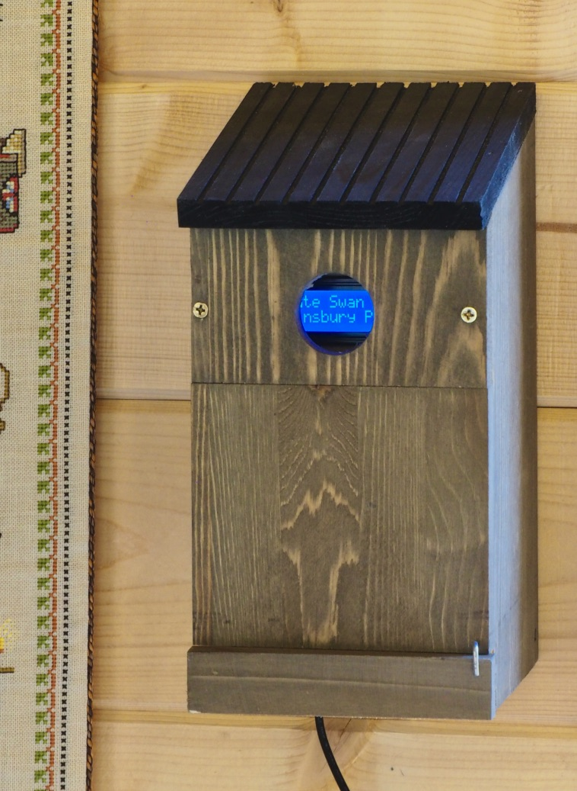

Ambient Twitcher
E-bird is a platform for twitchers to log sitings of birds everyday. A script on my Raspberry Pi regularly checks for endangered birds recently spotted in the UK and then plays their song through a surface transducer within my birdbox. With this ambient sound system always listening and calling throughout the day, I am becoming more aware of the species of bird that require extra care when I'm out in the hills and forests.
